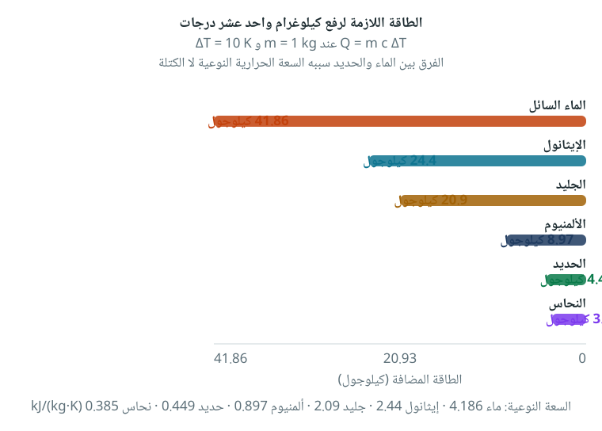

كيف تؤثر كتلة الماء في تسخينه؟
أضف كمية حرارة معلومة إلى كتلة ماء متغيّرة، وتابع درجة الحرارة على المقياس: نفس الطاقة ترفع الحرارة أكثر كلما قلّت الكتلة. محاكاة تعليمية لا قياس فيزيائي حقيقي.
محاكاة تعليمية لا قياس فيزيائي حقيقي: الأرقام تُحسب من النموذج لحظيًا، ولا تُقاس بأدوات منزلية.
افتراضات النموذج والمصدر
ΔT = Q / (m · c)
الماء يبدأ عند 20 °C، ونحسب حرارة الماء فقط بسعة نوعية ثابتة 4,186 J/(kg·K).
لا فقد حراري إلى الوسط أو الوعاء، ولا تغيّر في الطور خلال مدى المقياس.
ميزان الطاقة في الماء — حساب ΔT = Q/(m·c) — حساب انفراد من المعادلة المعيارية
Temperature Change and Heat Capacity — College Physics, §14.2 — OpenStax
توزّع الطاقة المضافة على كتلة الماء، فترفع حرارته بحسب سعته الحرارية النوعية. إذا قلّت الكتلة وبقيت الطاقة نفسها، زاد ارتفاع الحرارة لأن الطاقة المتاحة لكل وحدة كتلة أصبحت أكبر.
جرّب حالتين بالطاقة نفسها: ثبّت الحالة الأولى للمقارنة، ثم قلّل الكتلة واقرأ فرق ارتفاع الحرارة. ويمكنك اختيار الطاقة على المحور الأفقي لترى علاقة خطية، أو الكتلة لترى العلاقة العكسية مع ثبات الطاقة.
نفترض ماءً سائلًا يبدأ عند عشرين درجة وسعة نوعية ثابتة، ولا يستهلك الوعاء جزءًا من الطاقة ولا نفقد حرارة إلى الوسط. لا توجد فقاعات غليان في هذا المدى؛ المشهد يوضح كمية الماء وانتقال الطاقة فقط.
كيف تعمل الظاهرة؟
تعبر الحرارة إلى الماء فتزيد طاقته الداخلية. تربط السعة الحرارية النوعية كمية الطاقة بارتفاع الحرارة لكل وحدة كتلة، وتدخل في هذه الخاصية حركة الجزيئات وتفاعلاتها. عند ثبات السعة النوعية، تعطي الطاقة نفسها ارتفاعًا أقل إذا توزعت على كتلة أكبر؛ ولا تمثل حرارة الجسم وحدها مقدار طاقته الداخلية.
العلاقة بالأرقام
المعادلة: ΔT = Q / (m · c). عند كتلة الماء 1.0 kg، الحرارة المضافة 20 kJ، يعطي الحساب: ارتفاع الحرارة = 4.78 °C؛ درجة الحرارة النهائية = 24.78 °C. حالة «نصف كتلة الماء» (كتلة الماء 0.5 kg، الحرارة المضافة 20 kJ): ارتفاع الحرارة = 9.56 °C؛ درجة الحرارة النهائية = 29.56 °C. حالة «نفس الطاقة، كتلة مضاعفة» (كتلة الماء 2.0 kg، الحرارة المضافة 20 kJ): ارتفاع الحرارة = 2.39 °C؛ درجة الحرارة النهائية = 22.39 °C. هذه أمثلة مولدة من دالة الحساب نفسها؛ وليست قياسات فعلية أو مواصفات لجهاز تجاري.
مفاهيم متقاربة
التمييز المهم هنا بين الحرارة ودرجة الحرارة: الحرارة طاقة تنتقل وتُقاس بالجول، ودرجة الحرارة مؤشر على متوسط الطاقة الحركية للجزيء وتُقاس بالكلفن أو المئوية. كمية حرارة كبيرة في كتلة كبيرة قد تُنتج ارتفاعًا صغيرًا، وكمية صغيرة في كتلة صغيرة قد تُنتج ارتفاعًا كبيرًا. ومن هنا أيضًا الفرق بين السعة الحرارية الكلية (C = m·c) والسعة النوعية (c): الأولى تخصّ الجسم كله وتتغيّر مع كتلته، والثانية خاصية للمادة وحدها.
حدود التطبيق
النموذج يفترض: ماء سائل طوال التجربة بلا تبخّر ولا تجمّد، سعة حرارية نوعية ثابتة مع الحرارة (وهي تتغيّر قليلًا بين 20 و45 °C: نحو 4,182 عند 20 °C و4,180 عند 45 °C)، وعاءً بلا سعة حرارية، وصفر فقد حراري إلى الوسط. في الواقع يفقد الوعاء والوسط جزءًا من الحرارة، ولذلك تُقاس السعة الحرارية عمليًّا بمسعر معاير يُحسب فيه هذا الفقد. خارج هذه الحدود تصبح النتيجة تقديرية لا قياسية.

| الكمية | القيمة | المصدر |
|---|---|---|
| ارتفاع الحرارة — الحالة الافتراضية | 4.78 °C | [1] |
| درجة الحرارة النهائية — الحالة الافتراضية | 24.78 °C | [1] |
المصادر
- 1 ميزان الطاقة في الماء — حساب ΔT = Q/(m·c) — حساب انفراد من المعادلة المعيارية. openstax.org/books/college-physics/pages/14-2-temperature-change-and-heat-capacity · اطُّلع عليه 2026-11-16
- 2 Temperature Change and Heat Capacity — College Physics, §14.2 — OpenStax. openstax.org/books/college-physics/pages/14-2-temperature-change-and-heat-capacity · اطُّلع عليه 2026-11-16
- 3 Specific Heat Capacity of Water — Engineering ToolBox. www.engineeringtoolbox.com/specific-heat-capacity-water-d_660.html · اطُّلع عليه 2026-11-16
راجعه: عبدالله الهويدي — مراجعة في تطبيق انفراد 2026-11-16 · 2026-11-16 · آخر تحديث 2026-11-20
رجوع إلى المعمل